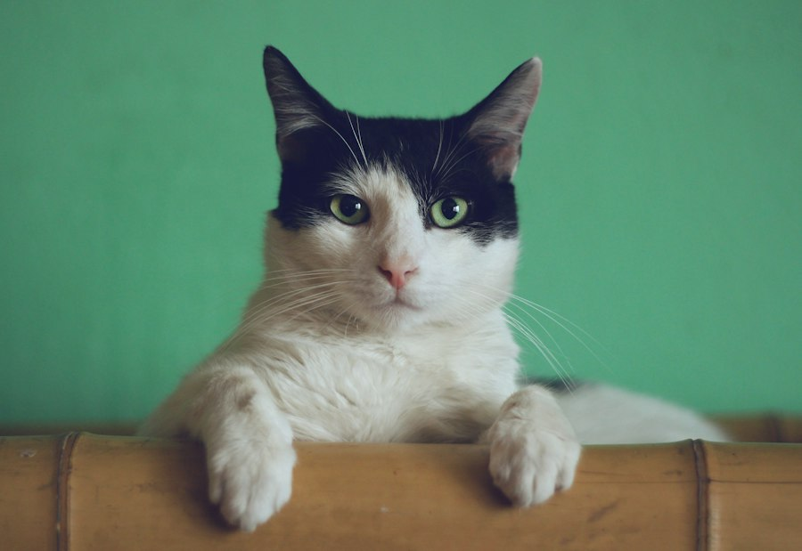

Independent & curious
Cat
Cats enjoy exploring, resting in cozy spots, and playing with their favorite toys.
- Lifespan
- 12–18 years
- Adult size
- 3.5–5 kg
- Daily time
- About 1 hour
- Monthly cost
- ≈ $40–80